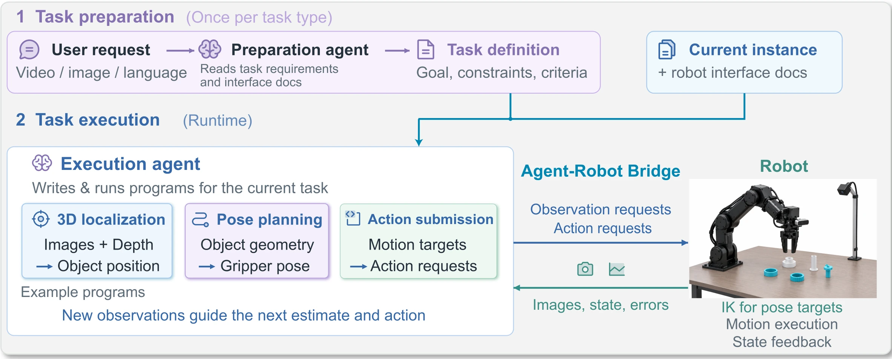

Codex CLI with GPT-6 Astra, high effort
Two pair assembly with a single arm. Model generation and robot motion overlap for 80.4 seconds.
- Model generating
- 425.8 s
- Robot motion
- 145.1 s
- Arm moving while the model generated
- 80.4 s
1University of Notre Dame 2University of California San Diego 3San Diego State University
AGP real world task examples
Follow a human demonstration using sequential or simultaneous folds.
Choose a variation
Fold the long edge, then bring the short ends inward one at a time, following the demonstration.
Fold the long edge, then bring both short ends inward together, following the demonstration.
Assemble each blue part with its demonstrated white counterpart, leaving all four pairs stable after release.
Build the pyramid shown in the goal photographs, matching the cube colors and their relative positions.
Build the two towers shown in the goal photographs, matching the cube colors and their relative positions.
Build the six block tower shown in the goal photographs, matching the color order.
Turn all six dice so each upward face matches the goal photograph for that die’s color.
Grasp the potato toy and throw it into the stationary bowl with a single joint swing.
Agent as Policy (AGP) puts a general purpose agent in control of robot planning and execution. Given a task and a robot interface, it uses visual feedback to reason, write programs and adjust physical actions, without training for the task or environment.
Across assembly, block construction, dice flipping, throwing and towel folding, AGP reaches at least 80% success in seven of eight task configurations. Saved procedures and programs also help the agent complete repeated trials faster.

During a task, the agent chooses what to observe, how to reason and program, and when to move or verify the result.
These examples illustrate choices made during execution. The agent develops, combines and revises approaches as the task unfolds.
From an unreliable depth reading to a position estimate written in Python.
Depth readings on a bright ring were unreliable. The agent used two camera views and a Python calculation to estimate its position.
The program finds the closest points on two viewing rays. The agent then adjusts the alignment and retries the insertion.
# Camera positions p, q and viewing directions a, b
p,a=ray(1,450,175)
q,b=ray(16,293,189)
dot=lambda a,b:sum(x*y for x,y in zip(a,b))
# Geometry between the two viewing rays
d=[q[i]-p[i] for i in range(3)]
aa=dot(a,a); bb=dot(b,b); ab=dot(a,b)
ad=dot(a,d); bd=dot(b,d)
# Solve for the closest point on each ray
t=(ad*bb-ab*bd)/(aa*bb-ab*ab)
s=(ab*ad-aa*bd)/(aa*bb-ab*ab)
# Print the two estimated 3D positions as [x, y, z]
print([p[i]+t*a[i] for i in range(3)],
[q[i]+s*b[i] for i in range(3)])Eight task configurations, 70 trials, every trial in a fresh session.
70
real-robot trials
7 of 8
configurations at 80% or higher
17.71 to 50.8 min
and USD 7.46 to 24.14
Scroll the table sideways for the rest of the columns.
* Time, tokens and cost are the mean [minimum, maximum] over successful trials, except throwing (†). Tokens are in millions. Success counts include all evaluated trials.
† Throwing reports all 10 trials, including the failed trial. Time is total session time.
Two complete two pair assembly trials, each with the video lined up against the agent's own record: what it said, which images it opened, which commands it ran, and what the robot answered. The overhead camera is the clock for both: every time in the log is a second of that recording, taken from the recorder's own frame log, and nothing here is aligned by hand. The overhead view is the only one that ships in this version.
Two pair assembly with a single arm. Model generation and robot motion overlap for 80.4 seconds.
Two pair assembly with a single arm. This recording is encoded at twice real time.
Without JavaScript the section falls back to a poster strip and the agent's own words as video captions.
Each run reads the saved files from earlier runs, measures the current scene and adds what it learned. The ring task and two pair assembly each repeat five times.
Total time, including saving experience
Total time, including saving experience
Reasoning and programmingTool executionSaving experience
The first and fourth cycles show the same task before and after earlier experience has accumulated.
870 seconds of task execution in cycle 1 of 5, starting with an empty experience store. The first insertion stalls; the agent measures a 9 mm grasp offset and retries.
372 seconds of task execution in cycle 4, run by a fresh agent that reads what earlier cycles wrote down. No retries.
These are the original saved lessons from the two pair assembly study. Select a run to inspect its geometry, procedure, corrections and instructions for later use.
Save triangulated heights and operate.py. Remeasure the receiver after it moves.
Record a 3.9 mm settle miss. Check visible engagement before releasing.
Raise the final hex insertion target from −20 mm to −18 mm.
Keep the revised height. Wait for each capture to finish before inspecting it.
Retain the recipe and fresh position measurements. Save outcomes from all five runs.
Triangulated part heights and saved operate.py, the motion recipe and image checks. A receiver moved during pickup, so its position was measured again.
Select a takeaway to see its evidence in the full record.
Download this saved recordDemo mapping: blue hex collar slides down narrow white hex-foot peg; round blue collar slides down wide stepped white cylinder; white stems remain protruding. All units metres, left_base, table z=-.045. Capture4 cross-camera triangulation gives estimated heights hex .014, round .027, narrow peg .076, wide peg .080 (rough +/- .003); textureless white depth was unreliable. Initial XY: hex (.29092,.04760), round (.25439,-.11896), narrow (.15762,.08173). Wide moved about .010 during hex pickup and was remeasured in cap14 at (.3402,-.0367), top z=.0348. Exact pixels/ray residuals and estimates in measurements.json. Canonical down quaternion wxyz=(0,1,0,0). Closure widths hex .0534 / fraction .559; round .0522 / .5461. Hole/shaft diameter estimates are approximate, not precision fit measurements.
Actual executed entry point python3 scratch/operate.py COMMAND JSON_ARGS (Python3 stdlib; calls provided robot_client.py only). Each action logs and captures, then operator inspects images before next action. Exact target and feedback sequence in cycle_01_recipe.json and commands.jsonl; do not blind replay XY. Initial clear planned target (.29,.045,.15) succeeded. Hex approach (.291,.0476,.025), grasp z=-.031, close, lift .09, transfer (.1576,.0817,.09), descend .052,.030,-.020; open; withdraw .120. Round approach (.2544,-.119,.120) then .025, grasp -.022, close, lift .10, transfer freshly measured (.3402,-.0367,.10), descend .065,.032,-.008; open; withdraw .120 then home. Commands used canonical down rotation; no explicit joint targets, achieved joints in capture metadata. Held objects confirmed caps8/19, peg entry caps11/22, stable released assemblies caps14/25-27. Latest final cap27 and empty open gripper .9991 supported accepted success. Stage took 512.465s, 52 counted commands through reporting.
No failed assembly attempt, regrasp, or insertion retry. Two initial linear observation approaches failed IK without motion (caps2/3); mode=plan at (.29,.045,.15) worked, then linear moves worked. Wide white receiver shifted about 1cm during hex pickup/lift, likely open-finger contact; remained upright. Fresh cap14 measurement replaced old center before round insertion. Avoid this by checking complete open-finger clearance; narrower preshape is only an untested suggestion. Unreliable white depth replaced by cross-camera center triangulation. No right-side contact observed.
No prior version existed; this establishes checkpoint1. Reuse operate.py, historical recipe and measured geometry; freshly measure all source/receiver centers, check upright orientation, heights, finger clearance, workspace limits and held offsets. Cap15 validated round source and cap14 validated moved receiver; no stale coordinates were replayed. Save time by top deprojection at estimated top heights followed by wrist cross-check near approach, rather than repeating solved demo/geometry analysis. Maintain per-action visual checks and current motion limits. After final home EE is about (.354,.015,.350), unlike initial (.287,-.016,.264); split >.25m approaches and use planned moves only in clear space. Only assigned next agent may start cycle2 after checkpoint; current cycle has ended and gripper is empty/withdrawn.
Reused the helper and heights with fresh object positions. A final target of −20 mm stopped near −18 mm; images supported releasing at that reached pose.
Select a takeaway to see its evidence in the full record.
Download this saved recordDemo: hex blue collar over narrow white hex-foot peg; round blue collar over wide stepped white cylinder, stems protruding. Metres in left base, table z=-.045; checkpoint1 triangulated approximate heights hex .014, round .027, narrow .076, wide .080 (+/- .003); textureless white depth unreliable. Cycle2 fresh top-plane centers and wrist alignment checks validated reuse: hex(.1598,-.1248), round(.3502,.1698), narrow(.1510,.0781), wide(.3231,-.0359). Canonical down wxyz=(0,1,0,0). Hex grasp z=-.031, round=-.022. Held widths cycle1 hex53.4mm/round52.2mm, cycle2 hex47.1mm/round52.0mm; hex width varies with yaw. Dimensions/diameters approximate, not precision metrology.
Reuse python3 scratch/operate.py COMMAND JSON_ARGS (Python3 stdlib, provided robot_client.py). It logs and captures after each action; operator must inspect before next action. Historical exact cycle2 commands/feedback in cycle_02_recipe.json; NEVER blind replay XY. From observed home ~(.350,.0156,.358), clear planned approach(.23,-.06,.16) succeeded; remaining moves linear. Hex source XY: approach .025, grasp -.031, close, lift .09, transfer fresh narrow XY at .09, descend .052,.030,-.020, open, withdraw .12. Round source XY: approach .12 then .025, grasp -.022, close, lift .10, transfer fresh wide XY at .10, descend .065,.032,-.008, open, withdraw .12, home. Both lifted holds and shaft entries visually confirmed; both collars remained engaged/stable after release, withdrawal, home and later capture; open empty gripper fraction .9991. No explicit joint targets; actual joints in capture metadata. Cycle1 stage512.465s; cycle2 467.965s, 48 counted commands.
Cycle1 initial two linear observation approaches failed IK without motion; planned clear approach worked. Wide receiver shifted ~1cm during hex pickup, likely finger contact; remeasured before round insertion. Check full open-finger clearance. Narrow preshape remains untested. Cycle2 no IK rejection, no observed receiver shift, no regrasp/insertion retry, one marked attempt. Hex final descent returned SETTLE_MISS3.9mm, achieved(.153871,.079752,-.018035); shaft visibly through collar. Opened at achieved pose without repeating/pushing; collar settled and stable after withdrawal. Error cause not established. This failed command is not a generally reusable successful action; release decision requires actual supported engagement evidence. Analysis view helper twice ran before new capture existed; waited for action completion then inspected actual fresh captures, no intervening action.
Actually reused checkpoint1 operate.py and grasp/insertion heights; new top-plane measurements and wrist observations validated upright poses, approach clearance and holds. Changed XY and initial planned approach; omitted repeated triangulation and failed linear approaches. Reuse cumulative checkpoint2 geometry, operate.py, and historical cycle_02_recipe.json with NEW observed source/receiver centers. Recheck upright orientation, estimated heights, complete finger envelope, held offsets, actual peg entry and stable release; remeasure any shifted part. Keep motion limits and per-action images. Home~(.350,.0156,.358): ensure first approach <=.25m, split if needed and plan only in clear space. Efficiency from prior solved geometry and direct clear approach, not skipped verification. Two ordered timings do not establish a controlled benefit. Only next assigned agent starts cycle3; current arm empty/open/withdrawn and cycle2 ended.
Changed the hexagonal collar’s final target from −20 mm to −18 mm. Saved the successful revised recipe and observations of movement during release.
Select a takeaway to see its evidence in the full record.
Download this saved recordDemo mapping: blue hex collar over narrow hex-foot white peg, blue round collar over wide stepped white cylinder; stems protrude. Left base metres, table z=-.045. Checkpoint1 approximate triangulated heights: hex .014, round .027, narrow .076, wide .080 (+/- .003); white textureless depth unreliable. Approx diameters hole/peg: hex .029/.026, round .045/.040, not precision metrology. Cycle3 fresh top-plane centers: hex(.1522,-.1285), round(.3352,.1540), narrow(.1446,.0755), wide(.3104,-.0342). Grasp z hex=-.031, round=-.022, canonical down wxyz=(0,1,0,0). Held widths cycles1/2/3 hex53.4/47.1/47.9mm (yaw dependent), round52.2/52.0/52.1mm.
Use python3 scratch/operate.py COMMAND JSON_ARGS (Python3 stdlib and provided robot_client.py); logs and captures after each action. Operator MUST inspect each returned capture before next action. cycle_03_recipe.json contains historical actual commands/feedback, not a blind replay. Fresh home about(.351,.0155,.355): clear planned approach(.23,-.06,.16) succeeded, all subsequent targets linear canonical down. Hex source XY approach z=.025, grasp -.031, close, lift .09, transfer fresh narrow XY .09, descend .052,.030,-.018, open, withdraw .12. Round source XY approach .12,.025, grasp -.022, close, lift .10, transfer fresh wide XY .10, descend .065,.032,-.008, open, withdraw .12, home. Cycle3 holds and shaft entries visibly confirmed, both assemblies engaged and stable after release/withdrawal/home/later capture; empty open fraction .9990. No explicit joint targets; achieved joints in capture metadata. Stage times cycles1/2/3:512.465/467.965/410.864s; cycle3 23 motion and25 capture calls,48 counted.
Cycle1 two initial linear approaches failed IK without motion; clear planned approach worked. Cycle1 wide receiver shifted about1cm during hex pickup, remeasured before round insertion; check complete open finger envelope. Narrow preshape remains untested. Cycle2 hex final target-.020 returned SETTLE_MISS3.9mm at achieved z=-.0180; peg visibly through collar, released there and confirmed stable rather than repeating/pushing. That failed command is not a reusable successful action. Cycle3 intentionally raised hex final target to-.018; achieved-.01765 and ok, then stable release. Hex assembly shifted roughly1-2cm during opening but remained upright/engaged; possible finger contact not established, inspect and remeasure if further manipulation. No cycle3 failed commands, regrasp or insertion retries. Round receiver visually unchanged before transfer. Earlier cycle2 view helper race: ensure motion/capture process has completed before opening new frame.
Actually reused checkpoint2 operate.py unchanged and cumulative geometry, grasp heights and approach recipe; fresh top-plane measurements and wrist checks validated upright parts, finger clearance, holds and entry. Changed all XY and hex final z to-.018. Reuse this checkpoint3 procedure with NEW observed source and receiver centers, never replay historical XY. Recheck orientation/heights, full finger envelope, grip offsets, peg entry and stable release; remeasure moved parts. Keep same motion limits and per-action images. First home-to-approach must be <=.25m; use plan only with clear path. Efficiency from solved geometry and avoiding prior rejected approaches/settle miss, not skipped verification. Timings are one ordered sequence, not controlled evidence of memory benefit. Current cycle3 ended, hand open/empty/withdrawn; next assigned agent alone starts cycle4.
Kept the −18 mm target and refreshed all object positions. Recorded that an asynchronous image helper must finish before its output is inspected.
Select a takeaway to see its evidence in the full record.
Download this saved recordDemo: hex blue collar over narrow hex-foot white peg, round blue collar over wide stepped white cylinder; shafts protrude. Left base metres, table z=-.045. Inherited checkpoint1 triangulated heights hex.014,round.027,narrow.076,wide.080 (+/-.003), textureless white depth unreliable. Approx hole/peg diameters hex.029/.026,round.045/.040, not precision metrology. Use top-ray planes -.031,-.018,.031,.035 respectively for fresh centers. Cycle4 XY hex(.1475,-.1239),round(.3107,.1631),narrow(.131,.0854),wide(.2971,-.0331), historical only. Grasp z hex-.031,round-.022; down wxyz=(0,1,0,0). Held widths cycles1/2/3/4 hex53.4/47.1/47.9/47.8mm (yaw dependent), round52.2/52.0/52.1/51.9mm.
Actually reused checkpoint3 operate.py unchanged and height recipe. Run python3 scratch/operate.py COMMAND JSON_ARGS; stdlib plus provided robot_client.py. It logs and captures after each action; MUST await completion and inspect returned image before next action. cycle_04_recipe.json preserves exact historical commands/feedback, never blindly replay XY. From home about(.350,.015,.358), clear planned approach(.23,-.06,.16); remaining canonical-down linear moves. Hex source approach .025,grasp-.031,close,lift.09,transfer fresh narrow XY .09,descend .052,.030,-.018,open,withdraw.12. Round source approach.12,.025,grasp-.022,close,lift.10,transfer fresh wide XY .10,descend .065,.032,-.008,open,withdraw.12,home. Both held lifts/shaft entries visually confirmed; both pairs stable after release/withdrawal/home/later capture, open empty fraction.9991. No explicit joint targets; actual joints in capture metadata. Measurement script uses operate.py/stdlb; view/report require Pillow. Stage seconds cycles1/2/3/4=512.465/467.965/410.864/395.131; cycle4 23 motion+25 capture=48 counted.
Cycle1 initial two linear approaches rejected IK; clear planned approach worked. Wide receiver shifted about1cm during hex pickup, remeasured: check full open finger envelope. Narrow preshape untested. Cycle2 hex final target-.020 SETTLE_MISS3.9mm at achieved z=-.018; visually engaged, released there successfully, never repeat push. Cycle3 changed hex target to-.018, achieved-.01765 and stable; assembly shifted roughly1-2cm during release but stayed engaged, cause uncertain. Cycle4 retained-.018, achieved-.01689, no obvious lateral hex shift. Round final target-.008 achieved-.00964 and visibly settled on release, stable afterward. Round grasp target-.022 achieved-.02568, held lift verified, no observed table contact. No failed commands/regrasp/insertion retries cycles3/4. Earlier cycle2/cycle4 view helper race: shell can return session ID before image update; wait for process completion then inspect actual new image. No cycle4 action used stale image.
Reuse checkpoint4 cumulative procedure (actually based on checkpoint3), measuring NEW source/receiver XY. Fresh upright poses, clear finger envelope, retained hold and shaft entry validated reuse this cycle; all XY changed, no physical recipe heights changed. Recheck orientation/heights, full gripper clearance, grip offsets, receiver movement and stable release. Remeasure any moved part. Same motion limits; first home-to-approach must be<=.25m; plan only on verified clear path. Efficiency through solved geometry and avoiding rejected approaches/settle miss, preserving per-action visual inspection. Timings describe one ordered sequence, not controlled evidence of experience benefit. Cycle4 ended with both pairs stable, hand open/empty/withdrawn; only next assigned agent starts cycle5. Cycle5 must checkpoint and report all five measured times/outcomes/retries/procedure changes.
Reused the helper and heights with newly measured positions. Saved the final outcomes, release observations and the five-run timing history.
Select a takeaway to see its evidence in the full record.
Download this saved recordDemo: hex blue collar over narrow hex-foot white peg, round blue collar over wide stepped white cylinder; shafts protrude. Left base metres, table z=-.045. Inherited checkpoint1 triangulated heights hex.014,round.027,narrow.076,wide.080 (+/-.003), textureless white depth unreliable. Approx hole/peg diameters hex.029/.026,round.045/.040, not precision metrology. Use top-ray planes -.031,-.018,.031,.035 respectively for fresh centers. Cycle4 XY hex(.1475,-.1239),round(.3107,.1631),narrow(.131,.0854),wide(.2971,-.0331), historical only. Grasp z hex-.031,round-.022; down wxyz=(0,1,0,0). Held widths cycles1/2/3/4 hex53.4/47.1/47.9/47.8mm (yaw dependent), round52.2/52.0/52.1/51.9mm. Cycle5 NEW initial XY hex(.1485,-.1114),round(.3212,.1616),narrow(.1185,.0800),wide(.2819,-.0323), historical only. Held widths cycle5 hex46.8mm,round51.8mm. No height changes.
Actually reused checkpoint4 operate.py unchanged and height recipe: python3 scratch/operate.py COMMAND JSON_ARGS, stdlib+provided robot_client.py. Await completion and inspect each returned action capture before next command. Clear initial planned approach(.23,-.06,.16) from home; then down wxyz=(0,1,0,0) linear. Hex fresh XY approach.025,grasp-.031,close,lift.09,transfer receiver.09,descend.052,.030,-.018,open,withdraw.12. Round fresh XY approach.12,.025,grasp-.022,close,lift.10,transfer receiver.10,descend.065,.032,-.008,open,withdraw.12,home. Both held lifts, shaft entries and stable released fits physically confirmed in all five cycles; cycle5 final open fraction.9991. No explicit joint targets; actual joints in capture metadata. Exact historical commands in cycle_05_recipe.json, never blindly replay XY. Measurement script needs operate.py and geometry_from_checkpoint1 in experience/cycle_03/artifacts/scratch/cycle_03_measurements.json (also embedded in cycle_05_measurements.json); view/report need Pillow. Stage seconds cycles1-5:512.465,467.965,410.864,395.131,362.099.
Cycle1 initial two linear approaches rejected IK; clear planned approach worked. Wide receiver shifted about1cm during hex pickup, remeasured: check full open finger envelope. Narrow preshape untested. Cycle2 hex final target-.020 SETTLE_MISS3.9mm at achieved z=-.018; visually engaged, released there successfully, never repeat push. Cycle3 changed hex target to-.018, achieved-.01765 and stable; assembly shifted roughly1-2cm during release but stayed engaged, cause uncertain. Cycle4 retained-.018, achieved-.01689, no obvious lateral hex shift. Round final target-.008 achieved-.00964 and visibly settled on release, stable afterward. Round grasp target-.022 achieved-.02568, held lift verified, no observed table contact. No failed commands/regrasp/insertion retries cycles3/4. Earlier cycle2/cycle4 view helper race: shell can return session ID before image update; wait for process completion then inspect actual new image. No cycle4 action used stale image. Cycle5 no command failure/regrasp/insertion retry. Hex final-.018 achieved-.01810; slight approximately1cm lateral shift on release stayed upright/engaged, cause uncertain. Round grasp-.022 achieved-.02613, total target error6.1mm with ok=true; inspected grip/lift, no observed table contact. Round final-.008 achieved-.00906; settled on release, stable after withdrawal/home. No stale image used; all processes awaited. Heights and physical recipe unchanged.
Assigned sequence ends at5: no next-cycle motion. Used checkpoint4 cumulative procedure (derived from3) unchanged except fresh XY. Upright poses, clear finger envelope, retained holds, shaft entries and stable release validated reuse; slight hex release displacement recorded. Any future independent use must remeasure source/receiver poses, recheck heights/orientation, clearances/held offsets and remeasure moved parts. Keep same limits and <=.25m moves. Five success markers and checkpoint5 complete sequence; final evidence checked again after checkpoint. Decreasing stage-time trend belongs to one ordered sequence with varying poses and analysis overhead, not a controlled comparison with five cycles without memory.
After five Astra runs, the saved experience is frozen. Each Terra trial reads the same files. The comparison uses five trials per condition.
Time and tokens summarize successful trials, one with without experience and four with Astra experience.
Trial 2 of 5 failed. The round pair is assembled, but the hex ring slips and pushes its post beyond the reachable workspace. Selected excerpts at 8× speed.
GPT-5.6 Terra reads the same saved Astra experience used in the transfer study. Shown at 8× speed, starting at task second 90.
AGP completes 2,100 evaluation episodes across 42 RoboDojo tasks and five capability categories with seed 0.
Score / SR (%)
| Method | Average | Avg. (w/o Open) | Generalization | Precision | Long-Horizon | Memory | Open |
|---|---|---|---|---|---|---|---|
| AGP Seed 0 | 63.63 / 56.13% | 63.10 / 54.60% | 59.79 / 54.67% | 50.90 / 44.00% | 49.48 / 28.75% | 92.22 / 91.00% | 65.75 / 62.25% |
Successful seed 0 trial.
Successful seed 0 trial.
See the links below for experimental details and results from all runs.
Four recorded failures with video, agent reports and human evaluation.
All 120 slots: final photo, outcome, model, arm, time, tokens, cost.
The model comparison, the experience studies, the time accounting, the protocol. On the same task GPT-5.6 Luna reached 0 of 5 and Claude Fable 5.1 reached 3 of 5.
Mean time ranges from 17.71 to 50.8 minutes and mean cost from USD 7.46 to 24.14 across configurations. Trial counts are limited by the time and cost of real robot evaluation.
@article{jia2026agentaspolicy,
title = {Agent as Policy for Robotic Manipulation},
author = {Jia, Mengzhao and Lin, Yang and Zhang, Xixin and Zhang, Zhihan and Liu, Xiaobai and Jiang, Meng},
journal = {arXiv preprint arXiv:2609.12541},
year = {2026}
}